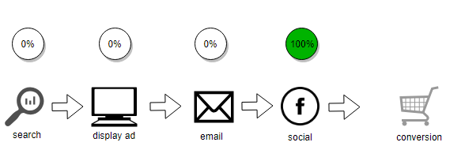
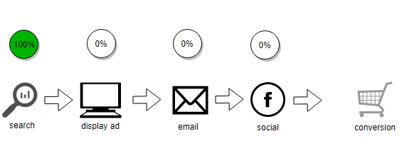
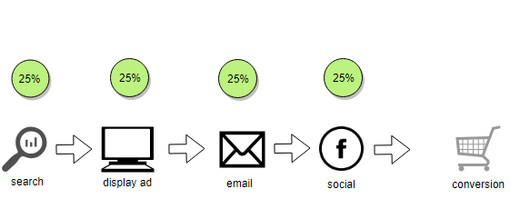
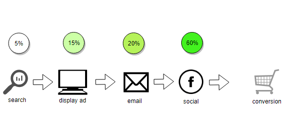
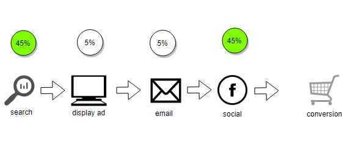
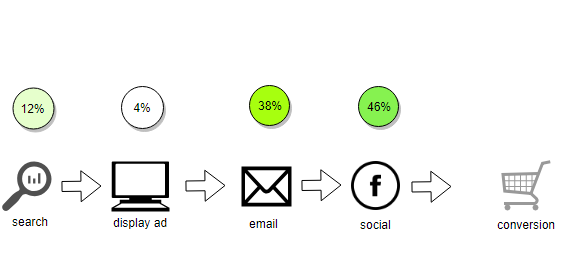
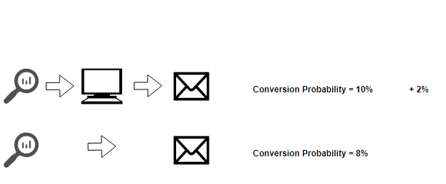
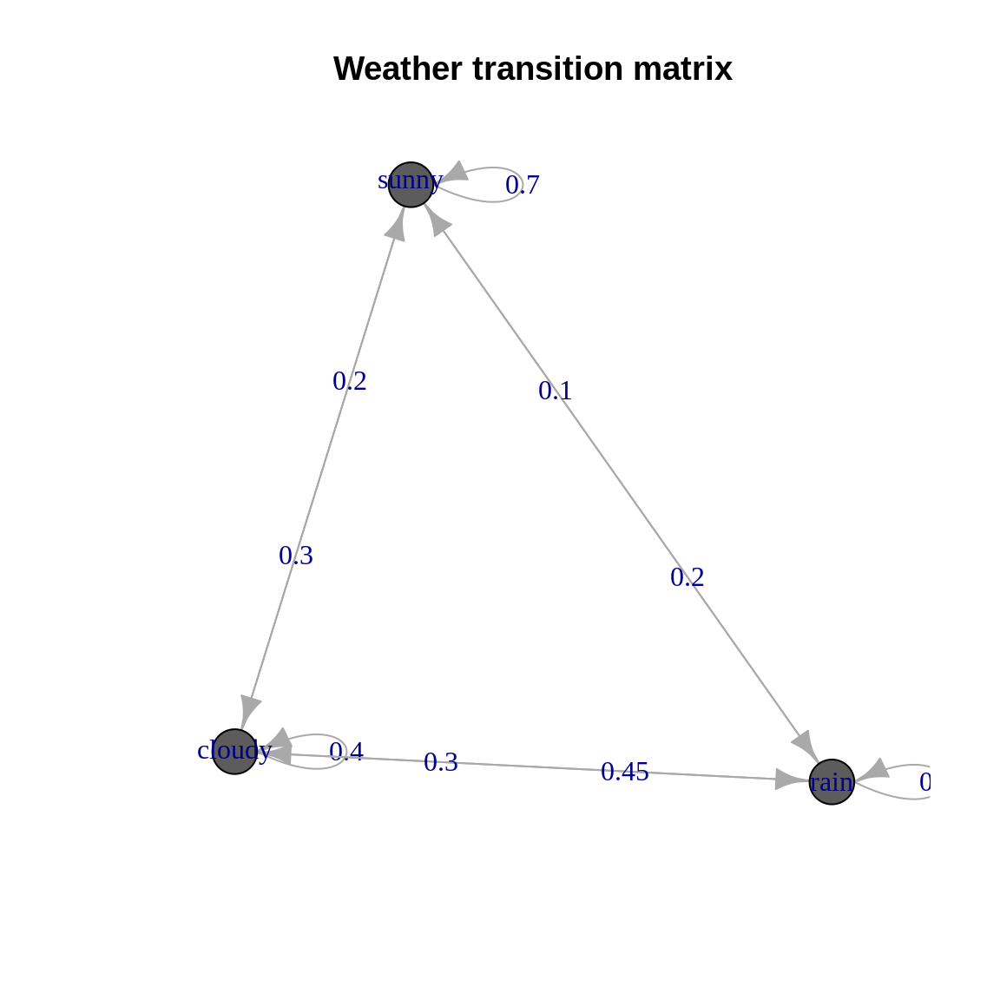
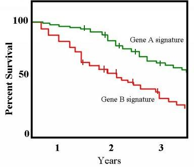

4 Methods
We will now take a practical tour of some common models for marketing attribution.
A customer wants to buy some swimwear on your website. They start with a Google search that leads them to your website, but no purchase is made. A few days later they click on a display ad and go back to your website, perhaps to take another look at the product range and sign up for special offers. One week later they get an email campaign while at work and click though to check for special deals, but don’t yet purchase. Later that evening, they see a Facebook ad and remember to grab their credit card and make a purchase.
So which channel caused this purchase? Was is the social channel that drove the customer to purchase, or was it the search result that made the customer initially aware of your brand, or was it the display and email campaigns that re-engaged the customer?
We will now look at a few different methods for making this decision.
4.1 Simplisitic Methods
Simplistic methods assign credit for a conversion to just one pre-determined touch point in the marketing journey. This is common and robust, but quite naive way to assess your marketing performance.
4.1.1 Last Touch
A classic example of a simplistic method is Last Touch attribution (sometimes also referred to as Last Interaction or Last Click).
In this model, all credit for the sale is attributed to the very last touch point in the customer’s conversion pathway. In this case the social channel.

4.1.2 First Touch
A First Touch model assigns all credit for a sale to the first channel in a customer’s conversion pathway. Here it is the search channel.

4.1.3 Others
There are a number of modifications to these that enable greater refinement. For example Last non-direct click is the same as Last Touch, but if the last touch is the direct channel, it ignores this and looks back to the last pure marketing channel.
4.2 Fractional Heuristic Methods
In some specialised cases, a simplistic model may work well, however an intuitive next step is to split the credit across all or several channels that lead to the conversion. Just like a game of football, one person scores the goal, but its the entire team that works together to create the scoring opportunity.
4.2.1 Linear
The least opinionated method is known as the Linear attribution model. This method assigns equal credit across all marketing channels in the customer’s conversion pathway.
In the example below all four touch points are assigned 25% credit for the value of the conversion.

4.2.2 Time Decay
In our scenario, considerable time passed between the first search, looking at the display ad, then getting an email campaign. A natural question is whether touch points from days or weeks ago really contribute equally to touch points made the day of a purchase? A model that accounts for this is the Time Decay model. This method adjusts the credit given to each channel based on how long ago the touch point occurred. This assigns less credit to distant touch points and more weighting to recent activity.

4.2.3 Position Based
Taking the concept of First Touch and Last Touch a step further, we can arbitrarily define attribution rules based on where in the conversion pathway a channel sits.
This is known as Position Based attribution. For example, below we have assigned 45% of the conversion credit to the first and last touch points, with equal amounts allocated to all touch points in between.

4.3 Fractional Algorithmic Methods
Algorithmic attribution models attempt to use historical data on actual conversion performance to measure or infer attribution, rather than rely on human defined rules and heuristics.

This is achieved through advanced statistical methods and algorithms that account for individual channel performance. Often these methods look at both the pathways for customers who converted and those who did not. This is a step up in sophistication and objectivity that can add tremendous value when simple rules are too naive to enable effective decision making.
4.3.1 Logistic Regression
Logistic regression is a commonly used statistical procedure developed in the 19th Century (Cramer 2002). In simple terms, it uses a function known as the logistic function, to model a binary outcome. This may be yes/no, true/false or in our case converted/not converted. It bases this on a set of independent variables that may have contributed to the outcome of choice.
As a fractional or multi-touch method, in our case this means determining which marketing channels contributed to whether a customer converted or not. Typically this means using the various marketing channels (email, display, search) as covariates in the model. For each customer journey, an indication will be made against each channel based on whether or not it was part of the customers conversion journey. This provides the basis for modelling the outcome of whether the customer converted or not.
| customer | display | search | converted? | |
|---|---|---|---|---|
| 12345 | TRUE | TRUE | FALSE | Yes |
| 38546 | FALSE | FALSE | TRUE | No |
| 48379 | TRUE | FALSE | FALSE | Yes |
| … | … | … | … | … |
In practice, many of the channels will be related and gaining statistically rigorous estimates can be challenging. Other statistical techniques like ‘bagging’ have been used to improve accuracy with these methods (Shao and Li 2011).
4.3.2 Shapley Value
The Shapley Value (Shapley 1953) originated in 1953 by Nobel Prize winning mathematician Lloyd Shapley. It is a concept in Game Theory, specifically in systems where many factors need to cooperate to achieve a given outcome. The Shapley Value is a way of allocating credit for the total outcome achieved amongst these many cooperating factors.
In terms of a marketing example, we can see a comparison of two pathways below. Including ‘Display’ in the sequence increases the likelihood of a purchase by 2%. Therefore we can attribute this increase to ‘Display’ despite it being only a link in the sequence. To get the complete credit given to Display, more historical comparisons need to be made with Display occurring at different locations and working with different touch points.

For the technically inclined, the formula to calculate the Shapley value for a given contributor is:
\[ \phi_i(v) = \frac{1}{\mid{N!}\mid}\sum_{R}[v(P_i^R \cup \{i\}) - v(P_i^R)] \]
To translate this, for any given marketing touch point (e.g. Display), what is the pay-off achieved where Display is part of the pathway sequence. Subtract from this the marginal contributions made by all the touch points preceding it. Add these contributions up across all permutations containing Display and divide by the total number of possible pathway permutations. This gives us our weighted marginal contribution to the overall outcome for a given marketing channel.
4.3.3 Markov Methods
A Markov Chain is a mathematical system that models events that transition from one ‘state’ to another. These states could be a touch point in a marketing journey, the current day’s weather or the health status of a patient. These concepts are explored further in (Gagniuc 2017).
By recording the probability of moving from one state to another a prediction of future states can be made by knowing the present state of the system.
A Markov Chain is defined by three properties:
- The state space – the set of all the states in which process could potentially exist
- The transition matrix – the probability of moving from one state to other state
- current state probability distribution – probability distribution of being in any one of the states at the start of the process.
Markov chains are stochastic processes, but they have a characteristic of being ‘memory-less’. This means the predictions they make depend only on the present state of the system. Having said that, an extension to discrete time markov chains is the ability to use different ‘order’ models to account for a small number of previous states when making future predictions. We will explore this further in Section 9.1.
A basic way to think about markov chains is via weather. If we look at some historical data on whether it is sunny, cloudy or rainy we can form probabilities of moving from one of these states to another. Intuitively if it’s sunny today, we could reasonably expect a high likelihood of sunny weather tomorrow. Conversely, if it is raining today then cloud or rain are probably more likely than sunshine tomorrow.
We can view these probabilities as a ‘transition matrix’, and even plot them as a directed network graph.
| sunny | cloudy | rain | |
|---|---|---|---|
| sunny | 0.7 | 0.20 | 0.10 |
| cloudy | 0.3 | 0.40 | 0.30 |
| rain | 0.2 | 0.45 | 0.35 |

If we know it is cloudy today we can represent that as:
\[ initial = \begin{bmatrix} sunny = 0 \\ cloudy = 1 \\ rain = 0\end{bmatrix} \]
By multiplying this into the transition matrix, we can get the probabilities of the the weather tomorrow. We can also simply read this result off our initial transition matrix.
| sunny | cloudy | rain |
|---|---|---|
| 0.3 | 0.4 | 0.3 |
We can continue this multiplication several times to forecast ahead say, seven days:
| sunny | cloudy | rain |
|---|---|---|
| 0.4622776 | 0.3188612 | 0.2188612 |
So how does this relate to marketing attribution? If we define the states in our model
to be the various touch points, such as email, paid search, display, social,
and include states such as start, end, converted we can fully articulate
our multi touch attribution model by observing the historical probability of
customers moving from one state to another.
Once we have this graph defined we can measure the importance of each touch point by removing them one-by-one and simulating the resulting impact on conversions. This is known as the ‘Removal Effect’ (Anderl et al. 2014) and is covered in more detail in the practical section in Section 9.1. It is a simple way to extend our ideas of multi-touch attribution beyond basic rule based methods.
4.3.4 Survivial Analysis
Survival analysis is a type of statistical analysis to model ‘time-to-event’ data. The name ‘survival’ evokes a medical application such as modelling how long diseased patients may survive under various treatments, however the method is applicable across a wide range of domains.
The key components of a survival analysis are (“Survival Analysis” 2019):
- Event: This is the thing of interest, it may be death, machine failure, or sales conversion etc.
- Time: The time from the beginning of an analysis period to either the end of the
study period or until the event of interest occurs, or disqualification from the analysis.
- Censoring: A key feature of survival analysis is censoring, which flags which
observations did not experience the event in the time period of the analysis.
- Survival Function: The probability that a subject survives longer than time t.
The concept of censoring is a clear distinction with this method. While a customer may be exposed to a marketing campaign, if they do not convert in the time period of the analysis, we cannot conclude they wont ever convert, just we have not observed a conversion event in our analysis time period.
A common method for estimating a survival function is with the use of a Kaplan-Meier curve (Kaplan and Meier 1958) which can be used to display a chart of declining horizontal steps over time, which approximates the true survival function.
 source: https://upload.wikimedia.org/wikipedia/commons/7/73/Km_plot.jpg
{kind=link}
Mathematically this can be defined as
\[ \hat{S}(t) = \prod\limits_{i: t_i \leq{t}} (1 - \frac{d_i}{n_i}) \]
Where \(\hat{S(t)}\) is our estimator of survival (non-conversion) at time \(t\). This formula looks at small time periods where events occur and calculates the survival probability based on the number of subjects who are still around at that time period.
There are many ways to extend this idea to marketing attribution. Rather than looking at assigning credit to touch points, we will take a slightly different approach.
In the practical section in section 9.2 we will compute an estimate for the survival function and stratify this by the channel in which our users converted. By doing this we can understand the likelihood of conversion though different channels at varying times throughout a typical conversion journey. This adds an interesting new dimension to analysing marketing performance.
4.4 Comparison of Methods
So which model is the right one to use? There is no clear cut answer. A one-size-fits-all model to attributing marketing credit does not exist (Shao and Li 2011).
The choice should be determined by an understanding of the goals of your marketing activities and how they drive business outcomes. As a general rule, without substantive justification, heuristic and simplistic methods are very subjective and should only serve as a baseline over the data-driven methods.
References
Anderl, Eva, Ingo Becker, Florian Wangenheim, and Jan Schumann. 2014. “Mapping the Customer Journey: A Graph-Based Framework for Online Attribution Modeling,” April. https://doi.org/10.2139/ssrn.2343077.
Cramer, Jan Salomon. 2002. “The Origins of Logistic Regression.” Tinbergen Institute Working Paper.
Gagniuc, Paul A. 2017. Markov Chains: From Theory to Implementation and Experimentation. John Wiley & Sons.
Kaplan, Edward L, and Paul Meier. 1958. “Nonparametric Estimation from Incomplete Observations.” Journal of the American Statistical Association 53 (282). Taylor & Francis: 457–81.
Shao, Xuhui, and Lexin Li. 2011. “Data-Driven Multi-Touch Attribution Models.” In Proceedings of the 17th Acm Sigkdd International Conference on Knowledge Discovery and Data Mining, 258–64. ACM.
Shapley, Lloyd S. 1953. “A Value for N-Person Games.” Contributions to the Theory of Games 2 (28): 307–17.